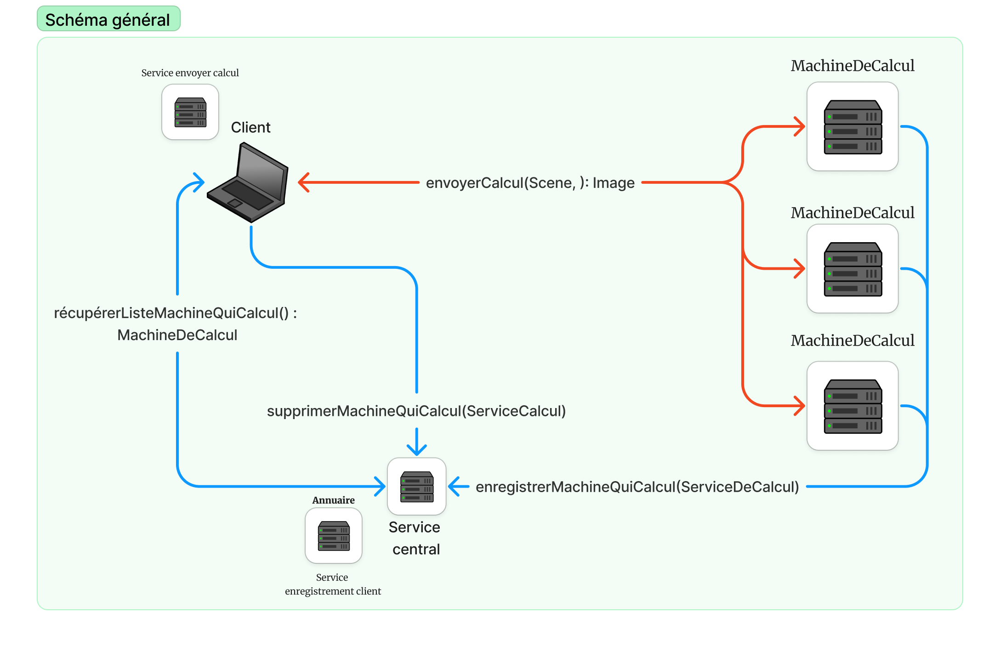

Mise en situation
Les calculateurs sont des machines qui s'enregistrent auprès du serveur afin de mettre leurs capacités de calcul à la disposition des clients.
Fonctionnement
Cette classe ServiceCalcul implémente l'interface InterfaceServiceCalcul et est marquée comme Serializable. Elle fournit un service pour calculer une partie spécifique d'une scène dans une image.
- calculerBoutScene(Scene scene, int x, int y, int largeur, int hauteur): Cette méthode reçoit une scène et des coordonnées définissant une section spécifique de cette scène. Il commence par imprimer un message indiquant qu'il commence le calcul. Il note également le moment du début du calcul. Ensuite, il effectue le calcul de la scène spécifiée en utilisant la méthode `compute` de la classe `Scene` qui prend les coordonnées de la section de la scène à calculer. Après le calcul, il note le moment de la fin du calcul et calcule la durée du calcul en millisecondes. Il imprime un message indiquant que le calcul est terminé et la durée du calcul. Finalement, il retourne l'image calculée.
En résumé, cette classe est une implémentation concrète de l'interface InterfaceServiceCalcul qui offre un service pour calculer une partie spécifique d'une scène dans une image.
